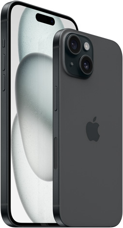

Mobile Item Page
Iphone15

iPhone 15 Pro is the first iPhone to feature an aerospace‑grade titanium design, using the same alloy that spacecraft use for missions to Mars. Titanium has one of the best strength‑to‑weight ratios of any metal, making these our lightest Pro models ever. You'll notice the difference the moment you pick one up.
Iphone15 Pro

The standard iPhone 15 lineup has upgraded 48MP Main Cameras, a USB 2.0 Type C port, and the Dynamic Island. This may be the last iPhone with a mute switch.